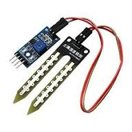

Sensor
Soil Moisture Sensor
Soil moisture sensors measure the volumetric water content in soil. Since the direct gravimetric measurement of free soil moisture requires removing, drying, and weighing of a sample, soil moisture sensors measure the volumetric water content indirectly by using some other property of the soil, such as electrical resistance, dielectric constant, or interaction with neutrons, as a proxy for the moisture content.
